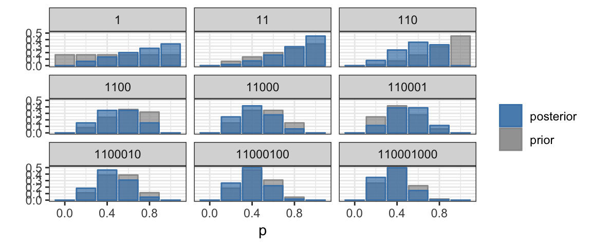
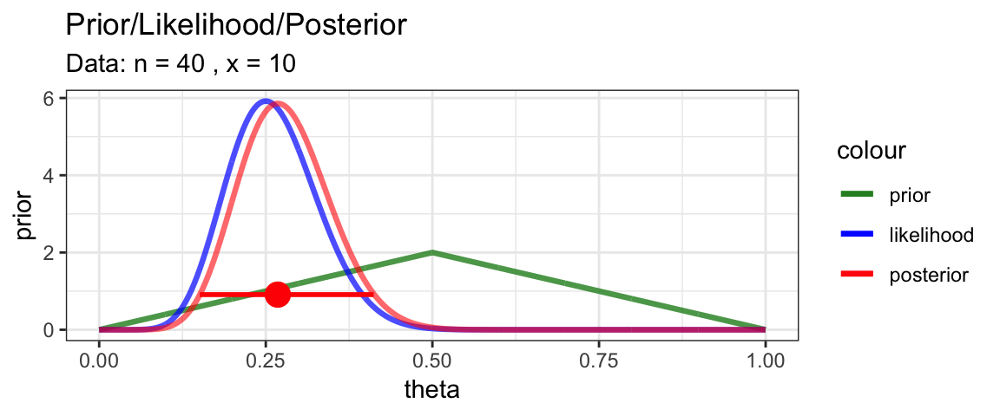
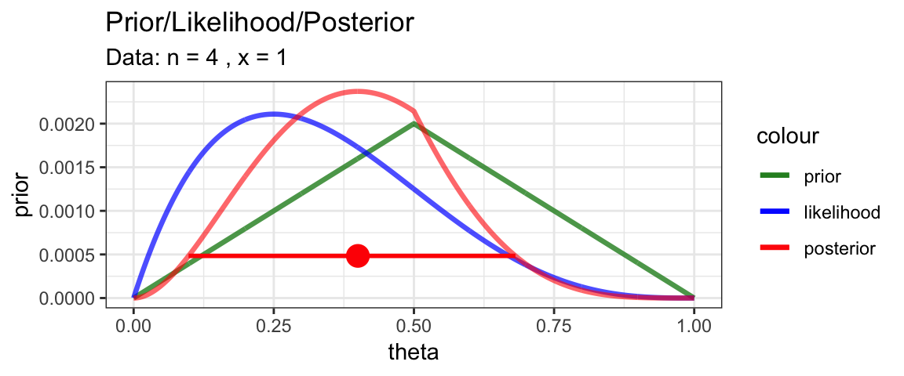

Chapter 4 Bayes’ Rule and the Grid Method
4.1 Estimating the bias in a coin using the Grid Method
4.1.1 Creating a Grid
library(purrr)
x <- 1; n <- 4
CoinsGrid <-
expand.grid(
theta = seq(0, 1, by = 0.001)
) %>%
mutate(
prior = pmin(theta, 1 - theta), # higher if farther from edges
prior = prior / sum(prior), # normalize
likelihood = map_dbl(theta, ~ dbinom(x = x, size = n, .x)),
posterior = prior * likelihood,
posterior = posterior / sum(posterior) # normalize
)4.1.2 Plots from the grid
gf_line(prior ~ theta, data = CoinsGrid)
gf_line(likelihood ~ theta, data = CoinsGrid)
gf_line(posterior ~ theta, data = CoinsGrid)
gf_area(prior ~ theta, data = CoinsGrid, alpha = 0.5)
gf_area(likelihood ~ theta, data = CoinsGrid, alpha = 0.5)
gf_area(posterior ~ theta, data = CoinsGrid, alpha = 0.5)
4.1.3 HDI from the grid
Let’s write a function to compute the Highest Density Interval (of the posterior
for theta) based on our grid. Since different grids may use
different names for the parameter(s) and for the posterior, we’ll write
our function in a way that will let us specify those names if we need
to, but use posterior and theta by default. And for good measure,
we’ll calculate the posterior mode as well.
The basic idea (after standardizing the grid) is to sort the grid by
the posterior. The mode will be at the end of the list, and the
“bottom 95%” will be the HDI (or some other percent if we choose a
different level).
This method works as long as the posterior is unimodal, increasing to the mode from either side.
HDI <- function(formula = posterior ~ theta, grid, level = 0.95) {
# Create a standardized version of the grid
model.frame(formula, data = grid) %>% # turn formula into data frame
setNames(c("posterior", "theta")) %>% # standardrize names
mutate(
posterior = posterior / sum(posterior) # normalize posterior
) %>%
arrange(posterior) %>% # sort by posterior
mutate(
cum_posterior = cumsum(posterior) # cumulative posterior
) %>%
filter(
cum_posterior >= 1 - level, # keep highest cum_posterior
) %>%
summarise( # summarise what's left
lo = min(theta),
hi = max(theta),
height = min(posterior),
level = level,
mode_height = last(posterior),
mode = last(theta),
)
} HDICoins <- HDI(posterior ~ theta, grid = CoinsGrid)
HDICoins| lo | hi | height | level | mode_height | mode |
|---|---|---|---|---|---|
| 0.098 | 0.681 | 0.0004833 | 0.95 | 0.0023698 | 0.4 |
With this information in hand, we can add a representation of the 95% HDI to our plot.
gf_line(posterior ~ theta, data = CoinsGrid) %>%
gf_hline(yintercept = ~height, data = HDICoins,
color = "red", alpha = 0.5) %>%
gf_pointrangeh(height ~ mode + lo + hi, data = HDICoins,
color = "red", size = 1) %>%
gf_labs(caption = "posterior mode and 95% HPI indicated in red")
4.1.4 Automating the grid
BernGrid <- function(
x, n,
prior = dunif,
res = 1001,
...) {
Grid <-
expand.grid(
theta = seq(0, 1, length.out = res)
) %>%
mutate(
prior = prior(theta, ...),
prior = prior / sum(prior),
likelihood = dbinom(x, n, theta),
likelihood = likelihood / sum(likelihood),
posterior = prior * likelihood,
posterior = posterior / sum(posterior)
)
H <- HDI(grid = Grid)
gf_line(prior ~ theta, data = Grid, color = ~"prior",
size = 1.15, alpha = 0.8) %>%
gf_line(likelihood ~ theta, data = Grid, color = ~"likelihood",
size = 1.15, alpha = 0.7) %>%
gf_line(posterior ~ theta, data = Grid, color = ~"posterior",
size = 1.15, alpha = 0.6) %>%
gf_pointrangeh(
height ~ mode + lo + hi, data = H,
color = "red", size = 1) %>%
gf_labs(title = "Prior/Likelihood/Posterior",
subtitle = paste("Data: n =", n, ", x =", x)) %>%
gf_refine(
scale_color_manual(
values = c(
"prior" = "forestgreen",
"likelihood" = "blue",
"posterior" = "red"),
breaks = c("prior", "likelihood", "posterior")
)) %>%
print()
invisible(Grid) # return the Grid, but don't show it
}This function let’s us quickly explore several scenarios and compare the results.
- How does changing the prior affect the posterior?
- How does changing the data affect the posterior?
library(triangle)
BernGrid(1, 4, prior = dtriangle, a = 0, b = 1, c = 0.5)
BernGrid(1, 4, prior = dunif)
BernGrid(10, 40, prior = dtriangle, a = 0, b = 1, c = 0.5)
BernGrid(10, 40, prior = dunif)
BernGrid(1, 4, prior = dtriangle, a = 0, b = 1, c = 0.8)
BernGrid(10, 40, prior = dtriangle, a = 0, b = 1, c = 0.8)
BernGrid(10, 40, prior = dbeta, shape1 = 25, shape2 = 12)